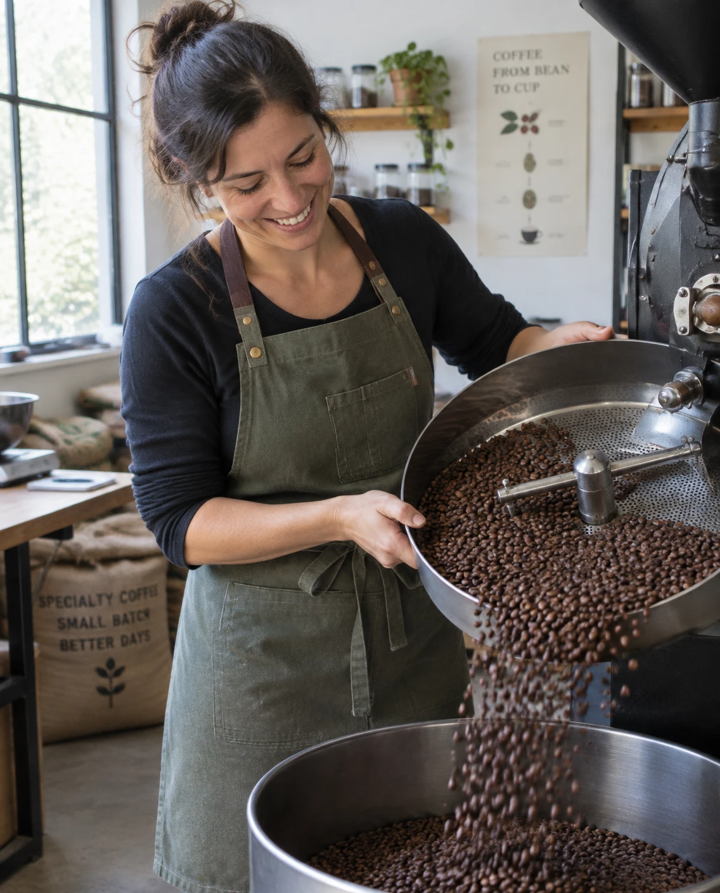

About
A small roaster on the canal

I'm Giulia, and I have been roasting coffee since a trip to Italy showed me what fresh beans can do.
Since 2021 I have run a small 5 kg roaster on the Oudegracht in Utrecht. I pick each lot myself from small producers, roast it in small batches and ship it young.
Everything we sell is something we drink ourselves. If you want advice on beans or grind, just ask.
What we care about
Small batches
5 kg at a time, so every bag is roasted days, not months, before you open it.
Carefully chosen producers
Every lot comes from a small producer we can name.
Recyclable packaging
Paper bags and cardboard boxes, no plastic filler.
Honest prices
The price you see is the price you pay, and shipping is shown before you order.